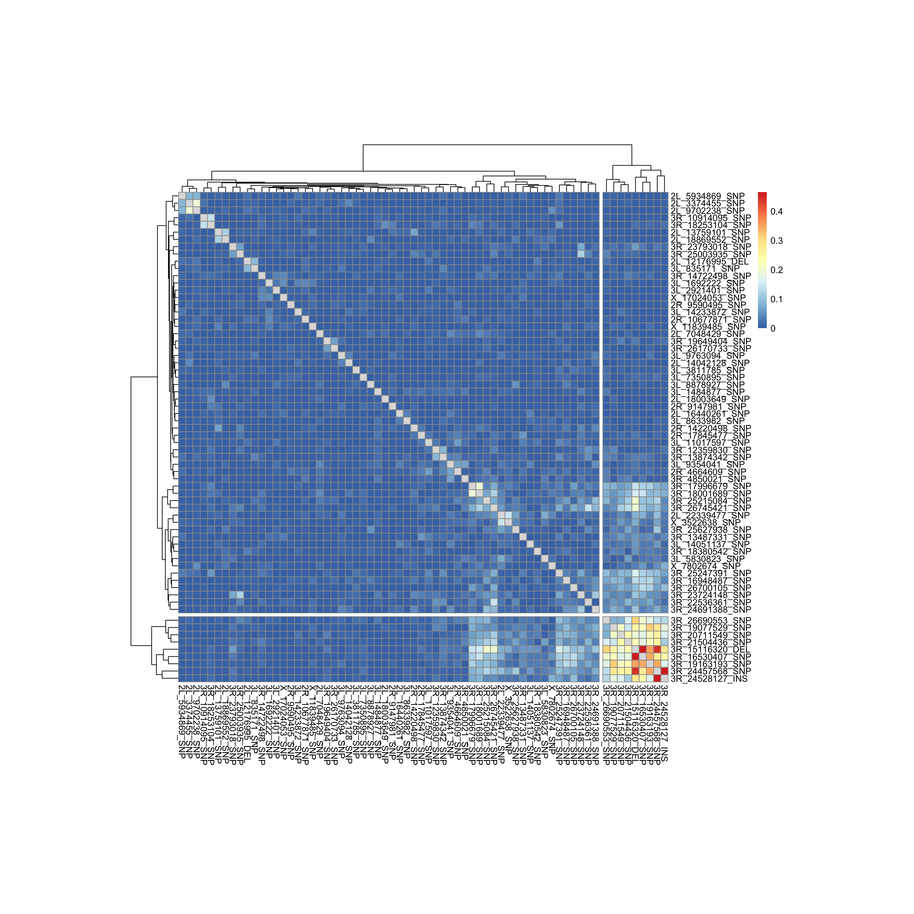
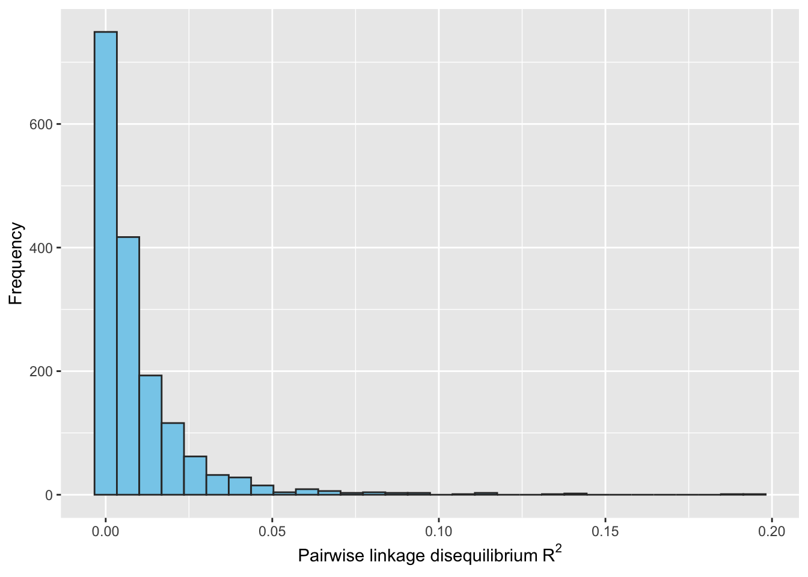
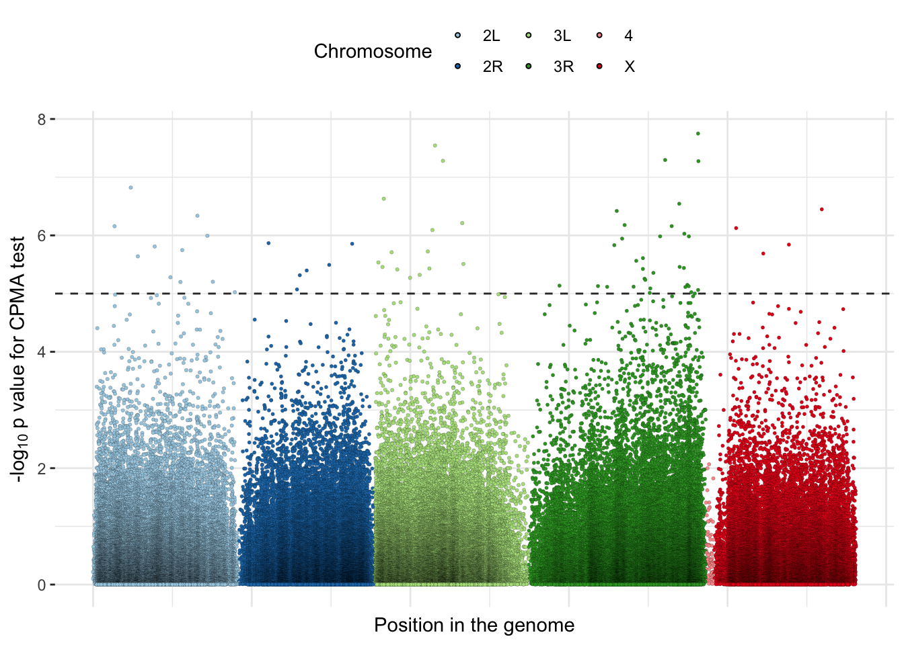
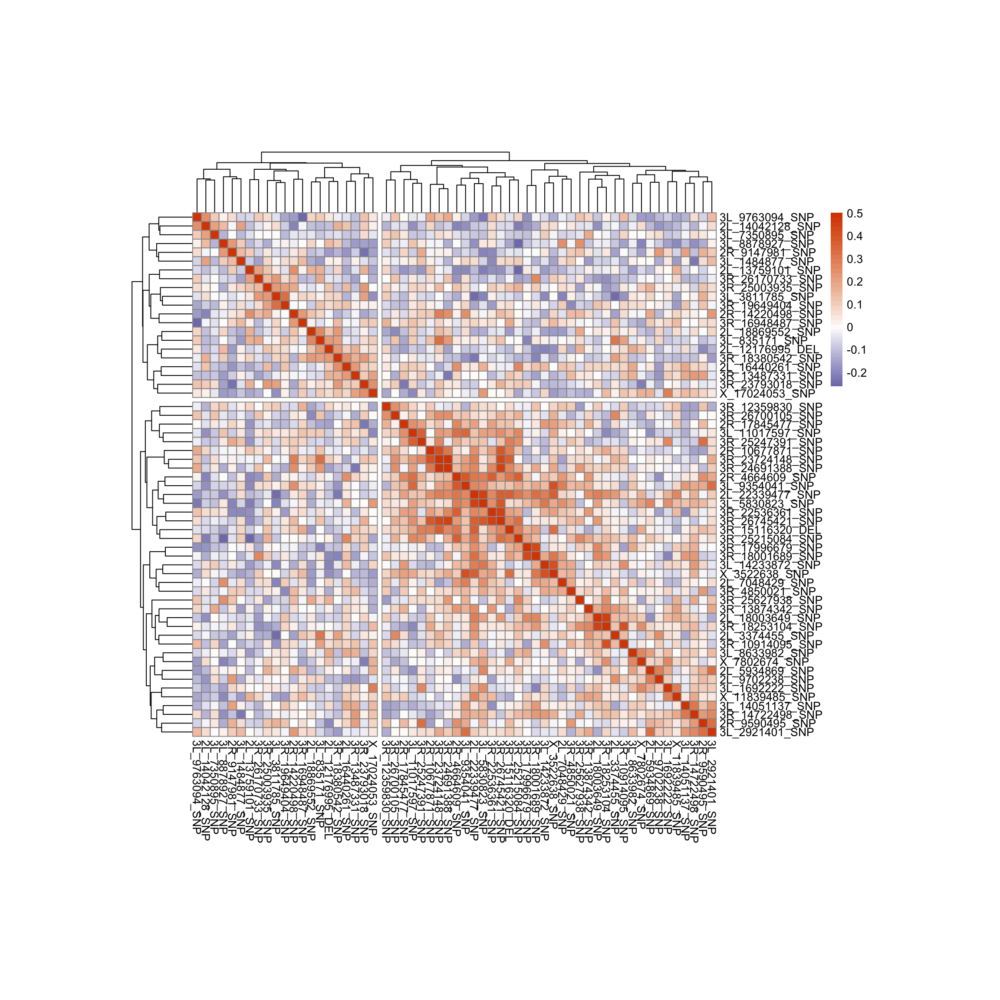
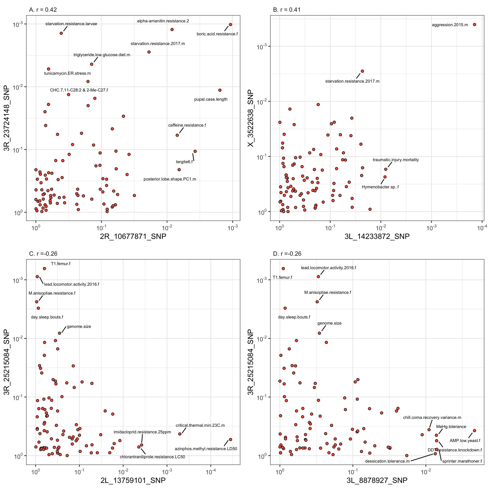

Last updated: 2022-11-25
Checks: 7 0
Knit directory: DGRP/
This reproducible R Markdown analysis was created with workflowr (version 1.7.0). The Checks tab describes the reproducibility checks that were applied when the results were created. The Past versions tab lists the development history.
Great! Since the R Markdown file has been committed to the Git repository, you know the exact version of the code that produced these results.
Great job! The global environment was empty. Objects defined in the global environment can affect the analysis in your R Markdown file in unknown ways. For reproduciblity it’s best to always run the code in an empty environment.
The command set.seed(20220705) was run prior to running
the code in the R Markdown file. Setting a seed ensures that any results
that rely on randomness, e.g. subsampling or permutations, are
reproducible.
Great job! Recording the operating system, R version, and package versions is critical for reproducibility.
Nice! There were no cached chunks for this analysis, so you can be confident that you successfully produced the results during this run.
Great job! Using relative paths to the files within your workflowr project makes it easier to run your code on other machines.
Great! You are using Git for version control. Tracking code development and connecting the code version to the results is critical for reproducibility.
The results in this page were generated with repository version 5175c38. See the Past versions tab to see a history of the changes made to the R Markdown and HTML files.
Note that you need to be careful to ensure that all relevant files for
the analysis have been committed to Git prior to generating the results
(you can use wflow_publish or
wflow_git_commit). workflowr only checks the R Markdown
file, but you know if there are other scripts or data files that it
depends on. Below is the status of the Git repository when the results
were generated:
Ignored files:
Ignored: .DS_Store
Ignored: .Rproj.user/
Ignored: data/.DS_Store
Ignored: data/derived/.DS_Store
Ignored: data/input/.DS_Store
Ignored: fits/
Ignored: gwas_data/.DS_Store
Ignored: gwas_data/derived/.DS_Store
Untracked files:
Untracked: analysis/exporting GWAS stats for the app.R
Untracked: analysis/luke_cluster_ideas.R
Untracked: analysis/luke_weighted_beta_ideas.R
Untracked: data/derived/correlation_SEs.rds
Untracked: data/imputed_data.RData
Untracked: gwas_data/README.md
Untracked: gwas_data/derived/bivariate_greml_results.tsv
Untracked: gwas_data/derived/delete_me.hsq
Untracked: gwas_data/derived/delete_me.log
Untracked: gwas_data/derived/dgrp2_QC_all_lines.bed
Untracked: gwas_data/derived/dgrp2_QC_all_lines.bim
Untracked: gwas_data/derived/dgrp2_QC_all_lines.fam
Untracked: gwas_data/derived/dgrp2_QC_all_lines.log
Untracked: gwas_data/derived/dgrp2_QC_all_lines_LDpruned.bed
Untracked: gwas_data/derived/dgrp2_QC_all_lines_LDpruned.bim
Untracked: gwas_data/derived/dgrp2_QC_all_lines_LDpruned.fam
Untracked: gwas_data/derived/dgrp2_QC_all_lines_LDpruned.log
Untracked: gwas_data/derived/dgrp2_QC_all_lines_LDpruned.rds
Untracked: gwas_data/derived/dgrp2_QC_all_lines_imputed_correct.bed
Untracked: gwas_data/derived/dgrp2_QC_all_lines_imputed_correct.bim
Untracked: gwas_data/derived/dgrp2_QC_all_lines_imputed_correct.fam
Untracked: gwas_data/derived/gcta_GRM.grm.N.bin
Untracked: gwas_data/derived/gcta_GRM.grm.bin
Untracked: gwas_data/derived/gcta_GRM.grm.id
Untracked: gwas_data/derived/gcta_GRM.log
Untracked: gwas_data/derived/gwas_results/
Untracked: gwas_data/derived/luke_phenotype.txt
Untracked: gwas_data/derived/manhattan_plots/
Untracked: gwas_data/derived/phenotype.txt
Untracked: gwas_data/derived/phenotype_pair.txt
Untracked: gwas_data/derived/plink.frq
Untracked: gwas_data/derived/plink.log
Untracked: gwas_data/derived/plink.prune.in
Untracked: gwas_data/derived/test_null.log
Untracked: gwas_data/input/
Untracked: iris.csv
Untracked: test.pdf
Untracked: test2.pdf
Untracked: test3.pdf
Unstaged changes:
Modified: analysis/Trait_correlations.Rmd
Note that any generated files, e.g. HTML, png, CSS, etc., are not included in this status report because it is ok for generated content to have uncommitted changes.
These are the previous versions of the repository in which changes were
made to the R Markdown
(analysis/cross_phenotype_meta_analysis.Rmd) and HTML
(docs/cross_phenotype_meta_analysis.html) files. If you’ve
configured a remote Git repository (see ?wflow_git_remote),
click on the hyperlinks in the table below to view the files as they
were in that past version.
| File | Version | Author | Date | Message |
|---|---|---|---|---|
| Rmd | 5175c38 | lukeholman | 2022-11-25 | Tweak text explaining code |
| html | 1cf7daa | lukeholman | 2022-11-01 | Build site. |
| Rmd | cf92cc8 | lukeholman | 2022-11-01 | wflow_publish("analysis/cross_phenotype_meta_analysis.Rmd") |
library(tidyverse)
library(dbplyr)
library(DBI)
library(RSQLite)
library(DT)
library(glue)
library(kableExtra)
library(pheatmap)
library(RColorBrewer)
library(gridExtra)
library(ggrepel)
library(scales)
library(pheatmap)
# Create a function to build HTML searchable tables
my_data_table <- function(df){
datatable(
df, rownames=FALSE,
autoHideNavigation = TRUE,
extensions = c("Scroller", "Buttons"),
options = list(
autoWidth = TRUE,
dom = 'Bfrtip',
deferRender=TRUE,
scrollX=TRUE, scrollY=1000,
scrollCollapse=TRUE,
buttons =
list('pageLength', 'colvis', 'csv', list(
extend = 'pdf',
pageSize = 'A4',
orientation = 'landscape',
filename = 'Trait_table')),
pageLength = 79
)
)
}
# A function to randomly select one trait per study, from among the traits measured in at least 80 DGRP lines
get_independent_traits <- function(){
set.seed(1) # Set the seed for reproducibility
read_csv("data/derived/meta_data_for_all_traits.csv") %>%
# restrict to only papers in the original database, i.e. not those added post-publication:
filter(Reference %in% read_csv("data/input/references_in_original_database.csv")$Reference) %>%
filter(`# lines measured` >= 80) %>% # Only analyse traits that measured at least 80 lines
group_by(Reference) %>%
sample_n(1) %>% # Randomly sample one phenotype per study
pull(Trait) %>% sort()
}Here we load a database of DGRP variant and gene annotations (prepared in the script XXXX from data from annotation hub and the Mackay lab website), as well as the GWAS summary statistics for a subset of all the phenotypic traits that were measured.
Because GWAS summary statistics for different phenotypes collected in the same study are usually not independent (e.g. because the phenotypes were measured on the same individual flies, or in the same experimental blocks or environmental conditions), we chose to thin the dataset by randomly selecting a single phenotypic trait per study. This means that each set of GWAS summary statistics corresponds to one independent measure of a DGRP phenotype, and so any similarity in how a given allele affects two different phenotypes is likely to reflect genetic processes such as pleiotropy, as opposed to spurious effects related to environmental similarities between the two measurements. We also only include GWAS summary statistics for GWAS computed using at least 80 DGRP lines. This thinning process left 92 traits for analysis.
db <- DBI::dbConnect(RSQLite::SQLite(),
"~/Rprojects/fitnessGWAS/data/derived/annotations.sqlite3")
# Randomly select one trait per study, from among the traits measured in at least 80 DGRP lines
independent_traits <- get_independent_traits()
# Get the list of GWAS summary statistics files, and the trait names found in those files' names
# Just get the files with LD-pruned list of SNPs, not the files with the significant SNPs (since these are different SNPs for different traits)
all_gwas_files <- list.files("gwas_data/derived/gwas_results", full.names = T)
all_gwas_files <- all_gwas_files[grepl("tsv", all_gwas_files) &
!grepl("_significant_SNPs", all_gwas_files)]
gwas_trait_names <- str_remove_all(str_remove_all(all_gwas_files,
"gwas_data/derived/gwas_results/"), "[.]tsv[.]gz")
# Here is the list of GWAS files/traits to be analysed (i.e. those in "independent_traits")
focal_gwas_files <- all_gwas_files[which(gwas_trait_names %in% independent_traits)]
# Get the SNP names out of the first GWAS file, and count the SNPs
all_snps <- read_tsv(focal_gwas_files[1]) %>% pull(SNP)
n_snps <- length(all_snps) This analysis uses the CPMA method proposed by [Cotsapas et al. 2011 PLoS Genetics, e1002254] (https://www.ncbi.nlm.nih.gov/pmc/articles/PMC3154137/), which takes as its input the \(p\)-values from a set of \(n\) independent association tests for \(n\) different phenotypes (here, \(n =\) 92).
Cotsapas et al. noted that for a variant which has no effect on any of the \(n\) traits, the \(p\)-values from the \(n\) association tests are expected to be uniformly distributed, which means that the \(-ln(x)\) transformed \(p\)-values are expected to be exponentially distributed with rate parameter \(\lambda = 1\). In contrast, if the focal variant is associated with one or more of the \(n\) traits, the \(-ln(x)\) transformed \(p\)-values are no longer expected to follow an exponential distribution with \(\lambda = 1\). Cotsapas et al. propose testing between the null expectation (\(\lambda = 1\)) and the observed value of \(\lambda\), termed \(\hat{\lambda}\) (which can be found via the maximum likelihood estimator, \(\hat{\lambda} = \frac{n}{sum(x)}\)) using a likelihood ratio test as follows:
\[CPMA = -2 \frac{P(p_1,p_2,...,p_n)|\lambda=1)}{P(p_1,p_2,...,p_n)|\lambda=\hat{\lambda})}\] The CPMA test statistic is expected to be \(\chi^2\) distributed (via Wilk’s theorem) with 1 degree of freedom, allowing calculation of a \(p\)-value for the null hypothesis that none of the \(n\) traits are associated with the focal variant If the CPMA test statistic is high enough that one should reject the null hypothesis, this implies that the focal variant is associated with one or more of \(n\) phenotypes.
In the code below, we calculate the CPMA test statistic and p-value for each of the 224159 variants in the LD-pruned subset.
find_likelihood <- function(logged_p, lambda) (lambda ^ length(logged_p)) * (exp(-1 * lambda * sum(logged_p)))
find_max_likelihood_lambda <- function(logged_p) length(logged_p) / sum(logged_p)
compute_CPMA <- function(p){
logged_p <- -1 * log(p)
likelihood_for_lambda_equal_1 <- find_likelihood(logged_p, 1)
likelihood_for_lambda_equal_ML_lambda <-
find_likelihood(logged_p, find_max_likelihood_lambda(logged_p))
# This is -2 log the likelihood ratio (usually written as -2\log(\Lambda)), which asymptotically approaches the chi-squared distribution under the null hypothesis
# There is one degree of freedom since only 1 parameter is estimated from the data (the ML lambda)
-2 * log(likelihood_for_lambda_equal_1 /
likelihood_for_lambda_equal_ML_lambda)
}
# This function finds the weighted mean effect size and the CPMA statistic for every variant in the i'th chunk of variants
# The weighted mean effect size is the means effect size of the focal variant on all the traits (called BETA in Plink's output),
# weighted by 1 over the standard error of the the effect size estimates.
do_snp_chunk <- function(i){
focal_snps <- chunked_snps[[i]]
all_betas <- map_df(1:length(focal_gwas_files),
~ read_tsv(focal_gwas_files[.x],
col_types = c("c", "n", "n", "n")) %>%
filter(SNP %in% focal_snps) %>%
mutate(trait = .x))
all_betas %>%
group_by(SNP) %>%
summarise(Weighted_mean_effect_size = weighted.mean(abs(BETA), w = 1 / SE),
CPMA_statistic = compute_CPMA(P)) %>%
mutate(CPMA_pval = 1 - pchisq(CPMA_statistic, df = 1))
}
chunked_snps <- split(all_snps, ceiling(seq_along(all_snps) / 50000))
cpma_snp_scores <- map_df(1:length(chunked_snps),
~ do_snp_chunk(.x)) %>%
left_join(tbl(db, "variants") %>%
filter(SNP %in% !!all_snps) %>%
select(SNP, MAF) %>% collect(), by = "SNP") %>%
distinct() %>%
arrange(CPMA_pval) %>%
mutate(p_adjusted = p.adjust(CPMA_pval))
rm(chunked_snps)Our initial analysis on the LD-pruned list of variants found 67
variants with CPMA scores with \(p <
10^{-5}\), as shown in the list below. However, some of these
variants appear to be located relatively close together on chromosome
arm 3R (note that the number in the variant name is its genomic
position, and there are several variants in a row on 3R), suggesting
that LD pruning via plink did not manage to remove all
linked variants:
SNPs_with_significant_CPMA <- cpma_snp_scores %>%
filter(CPMA_pval <= 1e-5) %>%
pull(SNP) %>% sort()
SNPs_with_significant_CPMA [1] "2L_12176995_DEL" "2L_13759101_SNP" "2L_14042128_SNP" "2L_16440261_SNP"
[5] "2L_18003649_SNP" "2L_18869552_SNP" "2L_22339477_SNP" "2L_3374455_SNP"
[9] "2L_5934869_SNP" "2L_7048429_SNP" "2L_9702238_SNP" "2R_10677871_SNP"
[13] "2R_14220498_SNP" "2R_17845477_SNP" "2R_4664609_SNP" "2R_9147981_SNP"
[17] "2R_9590495_SNP" "3L_11017597_SNP" "3L_14051137_SNP" "3L_14233872_SNP"
[21] "3L_1484877_SNP" "3L_1692222_SNP" "3L_2921401_SNP" "3L_3811785_SNP"
[25] "3L_5830823_SNP" "3L_7350895_SNP" "3L_835171_SNP" "3L_8633982_SNP"
[29] "3L_8878927_SNP" "3L_9354041_SNP" "3L_9763094_SNP" "3R_10914095_SNP"
[33] "3R_12359830_SNP" "3R_13487331_SNP" "3R_13874342_SNP" "3R_14722498_SNP"
[37] "3R_15116320_DEL" "3R_16530407_SNP" "3R_16948487_SNP" "3R_17996679_SNP"
[41] "3R_18001689_SNP" "3R_18253104_SNP" "3R_18380542_SNP" "3R_19077529_SNP"
[45] "3R_19163193_SNP" "3R_19649404_SNP" "3R_20711549_SNP" "3R_21504436_SNP"
[49] "3R_22536361_SNP" "3R_23724148_SNP" "3R_23793018_SNP" "3R_24457568_SNP"
[53] "3R_24528127_INS" "3R_24691388_SNP" "3R_25003935_SNP" "3R_25215084_SNP"
[57] "3R_25247391_SNP" "3R_25627938_SNP" "3R_26170733_SNP" "3R_26690553_SNP"
[61] "3R_26700105_SNP" "3R_26745421_SNP" "3R_4850021_SNP" "X_11839485_SNP"
[65] "X_17024053_SNP" "X_3522638_SNP" "X_7802674_SNP" To address this issue, we computed pairwise LD between all pairs of
variants with significant CPMA scores using the code below to run
plink:
# Define a helper function to pass commands to the terminal
# Note that we set `intern = TRUE`, and pass the result of `system()` to `cat()`,
# ensuring that the Terminal output will be printed in this knitr report.
run_command <- function(shell_command, wd = getwd(), path = ""){
cat(system(glue("cd ", wd, path, "\n", shell_command), intern = TRUE), sep = '\n')
}
get_ld_snp_pair <- function(snp1, snp2){
plink_output <- capture.output(run_command(glue(
"{plink} --bfile dgrp2_QC_all_lines_imputed_correct --ld {snp1} {snp2}"), path = "/gwas_data/derived/"))
as.numeric(str_remove_all(str_remove_all(str_split(plink_output[str_detect(plink_output, "R-sq = ")], "D' = ")[[1]][1], "R-sq ="), " "))
}
# I used plink v1.9 for MacOS, available here: https://www.cog-genomics.org/plink/
# Download and save plink into the directory 'code' if it's not already there
plink <- file.path(getwd(), "code/plink")
# Computing pairwise LD takes a little while, so save the results to avoid re-running it
if(!file.exists("data/derived/cmpa_snp_ld_matrix.rds")){
ld <- t(combn(SNPs_with_significant_CPMA, 2)) %>%
as.data.frame() %>% as_tibble() %>%
rename(SNP1 = V1, SNP2 = V2) %>% mutate(i =1:n()) %>%
split(.$i) %>%
map_df(~ {
output <- mutate(.x, R2 = get_ld_snp_pair(.x$SNP1, .x$SNP2))
print(output); output
}) %>% select(-i)
ld_matrix <- bind_rows(ld, tibble(SNP1 = ld$SNP2, SNP2 = ld$SNP1, R2 = ld$R2)) %>%
distinct() %>% spread(SNP2, R2) %>% as.data.frame()
rownames(ld_matrix) <- ld_matrix$SNP1
ld_matrix <- ld_matrix[,!names(ld_matrix) == "SNP1"]
ld_matrix <- as.matrix(ld_matrix)
saveRDS(ld_matrix, "data/derived/cmpa_snp_ld_matrix.rds")
} else ld_matrix <- readRDS("data/derived/cmpa_snp_ld_matrix.rds")
linked_variants_on_3R <- cutree(hclust(dist(ld_matrix)), k = 2)
linked_variants_on_3R <- sort(names(linked_variants_on_3R)[linked_variants_on_3R==2])
num_linked_variants_on_3R <- length(linked_variants_on_3R)The heatmap below shows pairwise linkage disequilbrium (\(R^2\)) among the 67 variants with CPMA scores with \(p < 10^{-5}\), and highlights a cluster of 9 variants in linkage disequilibrium on 3R, implying a recombination cold-spot on 3R that spans several megabases. We believe this region corresponds to the chromosomal inversion In(3R)P, because the 3R region contains the gene Glutamate dehydrogenase, which lies inside In(3R)P and because this inversion is known to be present in the North Carolina population (Sezgin et al. 2004, Genetics).
pheatmap(ld_matrix, cutree_rows = 2, cutree_cols = 2, cellwidth = 8, cellheight = 8)
| Version | Author | Date |
|---|---|---|
| 1cf7daa | lukeholman | 2022-11-01 |
When we exclude all the variants in the cluster from the previous
heatmap and plot the remaining pairwise linkage disequilbrium (\(R^2\)) values in a histogram, we see that
the great majority of the remaining CPMA-significant variants are in low
LD with one another (\(R^2 = 0-0.05\)),
and all have \(R^2 < 0.2\) (as
expected given the plink settings that were used to
identify the low-LD subset of variants). We thus conclude that most or
all of these variants are tagging weakly-linked or unlinked regions of
the genome that have pleiotropic effects on multiple traits.
trimmed_ld_scores <- ld_matrix %>%
as.data.frame() %>%
rownames_to_column("snp1") %>%
gather(snp2, LD, -snp1) %>% as_tibble() %>%
arrange(-LD) %>%
filter(!(snp1 %in% linked_variants_on_3R) & !(snp2 %in% linked_variants_on_3R))
t(combn(SNPs_with_significant_CPMA[
!(SNPs_with_significant_CPMA %in% linked_variants_on_3R)], 2)) %>%
as.data.frame() %>%
rename(snp1=V1, snp2=V2) %>%
left_join(trimmed_ld_scores) %>%
ggplot(aes(LD)) +
geom_histogram(fill="skyblue", colour = "grey20") +
xlab(expression ("Pairwise linkage disequilibrium"~R^2)) + ylab("Frequency")
| Version | Author | Date |
|---|---|---|
| 1cf7daa | lukeholman | 2022-11-01 |
This interactive table shows information about each of the 67 variants that had a higher CPMA score than expected under the null hypothesis that the variant was not associated with any of the 92 phenotypic traits used to compute our CPMA statistic (with \(p < 10^{-5}\)). Of these 67 variants with \(p < 10^{-5}\), 6 were statistically significant after applying Benjamini-Hochberg false discovery rate correction.
Variant column gives the name of the variant, which
includes its chromosome and genomic position, and whether it is a SNP,
insertion or deletion (SNP/INS/DEL respectively). The column also noted
whether the focal variant is part of the linked cluster on chromosome
arm 3L.Associated gene and Flybase ID columns
state which genes (if any) are overlapped by or close to the focal
variant; if there are multiple genes, their names/IDs are separated by
semicolons. The annotations come from the ‘variant annotation’ file
provided on the Mackay
lab website.Site class column describes the type of variant
(e.g. INTRON means the variant is in an intron of the associated gene);
if there are multiple genes, their names/IDs are separated by
semicolons. The annotations come from the ‘variant annotation’ file
provided on the Mackay
lab website.Minor allele and Major allele columns
give the least and most common alleles for the focal variant (based on
the frequencies across the DGRP), while the
Minor allele freq. column gives the frequency of the minor
allele in the DGRP.CPMA p-value (-log10) column gives the \(p\)-value from the cross-phenotype
meta-analysis test that was calculated for the focal variant,
transformed via \(-log_{10}(p)\). The 6
variants that were significant after false discovery rate correction
with \(q<0.05\) are
highlighted.analysis/run_GWAS.Rmd)SNPs_with_significant_CPMA <- cpma_snp_scores %>%
filter(CPMA_pval <= 1e-5) %>%
pull(SNP)
SNPs_with_FDR_significant_CPMA <- cpma_snp_scores %>%
filter(p_adjusted <= 0.05) %>%
pull(SNP)
get_SNP_effects_on_each_trait <- function(SNP_ids){
map_df(1:length(focal_gwas_files),
~ read_tsv(focal_gwas_files[.x],
col_types = c("c", "n", "n", "n")) %>%
filter(SNP %in% SNP_ids) %>%
mutate(trait = .x)) %>%
left_join(tibble(trait_name = independent_traits) %>% mutate(trait = 1:n()), by = "trait") %>%
select(trait_name, SNP, BETA, SE, P) %>% arrange(P) %>%
left_join(tbl(db, "variants") %>%
filter(SNP %in% SNP_ids) %>%
select(SNP, FBID, site.class, MAF, minor_allele, major_allele) %>%
collect(), by = "SNP") %>%
arrange(SNP)
}
process_info <- function(focal_SNPs, P_threshold = 0.01){
dat <- get_SNP_effects_on_each_trait(focal_SNPs)
split(dat, dat$SNP) %>%
map_df(~ {
sig_positive_traits <- .x %>% filter(P < P_threshold & BETA > 0) %>% pull(trait_name) %>% unique()
sig_negative_traits <- .x %>% filter(P < P_threshold & BETA < 0) %>% pull(trait_name) %>% unique()
tibble(Variant = .x$SNP[1],
`Minor allele positively associated (p<0.01) with:` = paste0(sig_positive_traits, collapse = "; "),
`Minor allele negatively associated (p<0.01) with:` = paste0(sig_negative_traits, collapse = "; "))
})
}
significant_CPMA_table <- tbl(db, "variants") %>%
filter(SNP %in% SNPs_with_significant_CPMA) %>%
left_join(tbl(db, "genes")) %>%
collect() %>%
left_join(cpma_snp_scores %>% select(SNP, CPMA_pval)) %>%
group_by(SNP) %>%
mutate(gene_name = paste0(gene_name, collapse = "; "),
FBID = paste0(FBID, collapse = "; "),
site.class = paste0(site.class, collapse = "; ")) %>%
ungroup() %>%
arrange(CPMA_pval) %>%
mutate(
CPMA_pval = round(-1 * log10(CPMA_pval), 2),
CPMA_pval = replace(
CPMA_pval,
SNP %in% SNPs_with_FDR_significant_CPMA,
paste(CPMA_pval[SNP %in% SNPs_with_FDR_significant_CPMA],"(FDR significant)"))) %>%
mutate(SNP = replace(
SNP,
SNP %in% linked_variants_on_3R,
paste(SNP[SNP %in% linked_variants_on_3R], "(in 3R cluster)"))) %>%
select(Variant = SNP,
`Associated gene` = gene_name,
`Flybase ID` = FBID,
`Site class` = site.class,
`Minor allele` = minor_allele,
`Major allele` = major_allele,
`Minor allele freq.` = MAF,
`CPMA p-value (-log10)` = CPMA_pval,
chr, position) %>%
distinct() %>%
left_join(process_info(SNPs_with_significant_CPMA)) %>%
distinct(Variant, .keep_all = T) %>%
mutate(`Major allele` = replace(
`Major allele`, nchar(`Major allele`) > 8,
paste(nchar(`Major allele`[nchar(`Major allele`) > 8]),"bp sequence", sep="")),
`Minor allele freq.` = format(round(`Minor allele freq.`, 2), nsmall = 2))
significant_CPMA_table %>%
select(-chr, -position) %>%
my_data_table()The Manhattan plot shows the CPMA p-values for each variant in the LD-pruned set of variants that we analysed, transformed via \(-log_{10}(p)\). The chromosomes are coloured individually. There are significant variants (defined as \(-log_{10}(p) > 5\)) on all the major chromosomes, with the strongest scores being found towards the telomeres of both arms of chromosome 3. This plot suggests that highly pleiotropic variants are found on chromosomes 2, 3, and the X, and may be less common near the centromere.
manhattan_data <- cpma_snp_scores %>%
mutate(position = str_split(SNP, "_"),
chr = map_chr(position, ~ .x[1]),
position = as.numeric(map_chr(position, ~ .x[2])),
CPMA_pval = -1 * log10(CPMA_pval)) %>%
select(chr, position, CPMA_pval)
max_pos <- manhattan_data %>%
group_by(chr) %>%
summarise(max_pos = max(position), .groups = "drop") %>%
as.data.frame()
max_pos$max_pos <- c(0, cumsum(max_pos$max_pos[1:5]))
manhattan_data <- manhattan_data %>%
left_join(max_pos, by = "chr") %>%
mutate(position = position + max_pos)
plot <- manhattan_data %>%
ggplot(aes(position, CPMA_pval, group = chr, fill = chr, stroke = 0.05)) +
geom_hline(yintercept = 5, linetype = 2, colour = "grey20") +
geom_point(size = 0.9, colour="black", pch = 21) +
scale_fill_brewer(palette = "Paired", name = "Chromosome") +
ylab(expression(paste("-", log[10], " p value for CPMA test"))) +
xlab("Position in the genome") +
theme_bw() +
theme(axis.text.x = element_blank(),
legend.position = "top",
panel.border = element_blank(),
axis.ticks.x = element_blank())
plot
| Version | Author | Date |
|---|---|---|
| 1cf7daa | lukeholman | 2022-11-01 |
One might ask whether any of the 67 CPMA-significant pleiotropic
variants (with \(p < 10^{-5}\))
identified here were already identified in univariate GWAS (with \(p < 10^{-5}\) or better), due to having
a strong enough association with one or more individual phenotypes. Of
the 67 CPMA-significant variants, only 5 were significantly associated
with one of the 92 tested phenotypes with \(p
< 10^{-5}\), as shown in this table of plink
univariate association test results filtered for \(p < 10^{-5}\). Thus, 62/67 of the
pleiotropic variants identified in our CPMA analysis were not detected
in earlier univariate GWAS. This lack of detection implies that the
pleiotropic variants discovered here are often not strongly associated
with any one trait, but instead are moderately associated with multiple
traits. This would make sense, because a variant that was strongly
associated with many different phenotypes would likely be under strong
selection, and would thus have a low enough minor allele frequency that
it could not be detected in studies based on the DGRP (which has limited
power for variants with MAF<5%).
snp_effects %>%
filter(P < 1e-5) %>%
mutate(P = round(-1 * log10(P), 2)) %>%
arrange(-P) %>%
rename(Variant=SNP,
`Phenotype showing the significant association` = trait_name,
`-log10(P)` = P) %>%
kable(digits = 2) %>%
kable_styling(full_width=F)| Phenotype showing the significant association | Variant | BETA | SE | -log10(P) |
|---|---|---|---|---|
| drosophila.C.virus.resistance.m | 3L_7350895_SNP | 0.98 | 0.08 | 23.47 |
| CHC.7,11-C28:2 & 2-Me-C27.f | 3R_16530407_SNP | 0.45 | 0.09 | 5.38 |
| tunicamycin.ER.stress.m | 2L_18869552_SNP | 0.63 | 0.13 | 5.33 |
| week5.fecundity.25C.f | 2L_16440261_SNP | 0.43 | 0.09 | 5.06 |
| micro.environmental.plasticity.lifespan.28C.m | 3L_835171_SNP | -0.65 | 0.14 | 5.02 |
The heatmap shows the correlations in association test \(-log_{10}\) p-values between variants on each of the 92 phenotypic traits, for all the weakly-linked variants with a significant CPMA test statistics (\(p < 10^{-5}\)). A positive correlation between two pleiotropic variants means that the variants tend to show stronger associations with the same traits, while a negative correlation means that the traits that are strongly associated with variant 1 tend not to be strongly associated with variant 2 (and vice versa).
All except one variant (namely 3R_15116320_DEL) from the high-LD clump on chromosome 3R has been removed, such that linkage disequilibrium is low or zero between most of the SNP pairs in this figure (see the histogram of pairwise LD values above). The figure illustrates that there are many pairs of variants that have similar associations with multiple different traits, despite the variants not being in linkage disequilibrium. This finding indicates that variants in different genomic regions may perturb the same process, genetic/physiological pathway, or biological process, and suggests that multiple pleiotropic variants with a similar effect on the multivariate phenotype underlie the genetic correlations observed in our dataset (e.g. in the figures examining correlations between line means for different phenotypes).
# Effect sizes of all the significant variants on all the phenotypes
snp_effects <- map_df(1:length(focal_gwas_files),
~ read_tsv(focal_gwas_files[.x],
col_types = c("c", "n", "n", "n")) %>%
filter(SNP %in% SNPs_with_significant_CPMA) %>%
mutate(trait = .x)) %>%
left_join(tibble(trait_name = independent_traits) %>%
mutate(trait = 1:n()), by = "trait") %>%
select(trait_name, SNP, BETA, SE, P)
matrix_version <- snp_effects %>%
filter(!(SNP %in% linked_variants_on_3R[-1])) %>%
select(trait_name, SNP, P) %>%
mutate(P = -1 * log10(P)) %>%
spread(SNP, P)
rr <- matrix_version %>% pull(1)
matrix_version <- as.matrix(matrix_version[, -1])
rownames(matrix_version) <- rr
cor_mat <- cor(matrix_version, use = "pairwise.complete.obs")
paletteLength <- 50
myColor <- colorRampPalette(c(brewer.pal(9, "Purples")[6], "white", brewer.pal(9, "Oranges")[7]))(paletteLength)
myBreaks <- c(seq(min(cor_mat, na.rm=T), 0, length.out=ceiling(paletteLength/2) + 1),
seq(max(cor_mat[cor_mat!=1], na.rm=T)/paletteLength, max(cor_mat[cor_mat!=1], na.rm=T),
length.out=floor(paletteLength/2)))
pheatmap(cor_mat, cutree_rows = 2,
cellwidth = 7.6, cellheight = 7.6,
cutree_cols = 2, col = myColor, breaks = myBreaks)
| Version | Author | Date |
|---|---|---|
| 1cf7daa | lukeholman | 2022-11-01 |
In the following plots, each point represents one phenotypic trait, and each point’s position shows the p-values from separate univariate association tests for the pair of variants specified on the x- and y-axis labels. For clarity, only phenotypic traits with \(p < 0.01\) in a univariate association test for one/both variants are labelled. The pairs of variants shown in panels A and B are the pairs showing the strongest positive correlations in p-values across traits, among all the completed unlinked CPMA-significant variant pairs (defined here as those with linkage disequilibrium R < 0.01). The variant pairs shown in panels C and D are those with the strongest negative correlations in p-values across traits, again among unlinked CPMA-significant variant pairs.
The plots illustrate the similarities and differences in how these pairs of CPMA-significant pleiotropic variants are associated with different traits. Note that there are some traits that are strongly associated with both pleiotropic variants (in panels A and B), and some traits that are strongly associated with one variant but not with the other (in all panels, but especially in C and D). Thus, some pleiotropic variants associate with many of the same traits as other (unlinked) pleiotropic variants, but there are also pleiotropic variants that associate with discrete sets of traits.
reverselog_trans <- function(base = exp(1)) {
trans <- function(x) -log(x, base)
inv <- function(x) base^(-x)
trans_new(paste0("reverselog-", format(base)), trans, inv,
log_breaks(base = base),
domain = c(1e-100, Inf))
}
make_repel_plot <- function(snp1, snp2, title){
x <- snp_effects %>%
select(trait_name, SNP, P) %>%
filter(SNP %in% c(snp1, snp2)) %>%
spread(SNP, P) %>% as.data.frame()
xlab <- snp1; ylab <- snp2
names(x)[2:3] <- c("snp1", "snp2")
x <- x %>%
mutate(trait_name = replace(trait_name,
snp1 > 0.01 & snp2 > 0.01,
""),
title = title)
ggplot(x, aes(snp1, snp2, label = trait_name)) +
scale_x_continuous(trans = reverselog_trans(10),
labels = trans_format("log10", math_format(10^.x))) +
scale_y_continuous(trans = reverselog_trans(10),
labels = trans_format("log10", math_format(10^.x))) +
geom_point(fill = "tomato", pch = 21) +
geom_text_repel(size = 2.2, point.padding = unit(0.5, 'lines'), force = 20, max.iter = 10^4) +
xlab(xlab) + ylab(ylab) +
facet_wrap(~ title) +
theme_bw() +
theme(strip.background = element_blank(), strip.text = element_text(hjust=0))
}
all_corrs_and_ld <- cor_mat %>%
as.data.frame() %>%
rownames_to_column("snp1") %>%
gather(snp2, cor, -snp1) %>%
as_tibble() %>%
arrange(-abs(cor)) %>%
mutate(chr1 = str_split(snp1, "_") %>% map_chr(~.x[1]),
chr2 = str_split(snp2, "_") %>% map_chr(~.x[1])) %>%
filter(snp1 != snp2) %>% # & chr1 != chr2) %>%
slice(seq(2, n(), by=2)) %>%
left_join(ld_matrix %>%
as.data.frame() %>%
rownames_to_column("snp1") %>%
gather(snp2, LD, -snp1))
for(i in 1:nrow(all_corrs_and_ld)){
# print(paste(i, nrow(all_corrs_and_ld), sep = "/"))
if(is.na(all_corrs_and_ld$LD[i])){
all_corrs_and_ld$LD[i] <- get_ld_snp_pair(all_corrs_and_ld$snp1[i], all_corrs_and_ld$snp2[i])
}
}
top_correlations <- all_corrs_and_ld %>%
filter(LD < 0.01) %>% mutate(cor = paste("r =", format(round(cor, 2), nsmall=2), sep="")) %>%
head(4)
bottom_correlations <- all_corrs_and_ld %>%
arrange(cor) %>%
filter(LD < 0.01) %>% mutate(cor = paste("r =", format(round(cor, 2), nsmall=2), sep="")) %>%
head(4)
grid.arrange(
make_repel_plot(top_correlations$snp1[1], top_correlations$snp2[1], paste("A.", top_correlations$cor[1])),
make_repel_plot(top_correlations$snp1[2], top_correlations$snp2[2], paste("B.", top_correlations$cor[2])),
make_repel_plot(bottom_correlations$snp1[1], bottom_correlations$snp2[1], paste("C.", bottom_correlations$cor[1])),
make_repel_plot(bottom_correlations$snp1[2], bottom_correlations$snp2[2], paste("D.", bottom_correlations$cor[2])))
| Version | Author | Date |
|---|---|---|
| 1cf7daa | lukeholman | 2022-11-01 |
sessionInfo()R version 4.0.3 (2020-10-10)
Platform: x86_64-apple-darwin17.0 (64-bit)
Running under: macOS Catalina 10.15.7
Matrix products: default
BLAS: /Library/Frameworks/R.framework/Versions/4.0/Resources/lib/libRblas.dylib
LAPACK: /Library/Frameworks/R.framework/Versions/4.0/Resources/lib/libRlapack.dylib
locale:
[1] en_GB.UTF-8/en_GB.UTF-8/en_GB.UTF-8/C/en_GB.UTF-8/en_GB.UTF-8
attached base packages:
[1] stats graphics grDevices utils datasets methods base
other attached packages:
[1] scales_1.2.0 ggrepel_0.8.2 gridExtra_2.3 RColorBrewer_1.1-2
[5] pheatmap_1.0.12 kableExtra_1.3.4 glue_1.4.2 DT_0.13
[9] RSQLite_2.2.0 DBI_1.1.0 dbplyr_2.1.1 forcats_0.5.1
[13] stringr_1.4.0 dplyr_1.0.7 purrr_0.3.4 readr_2.1.2
[17] tidyr_1.1.4 tibble_3.1.6 ggplot2_3.3.6 tidyverse_1.3.2
[21] workflowr_1.7.0
loaded via a namespace (and not attached):
[1] fs_1.4.1 lubridate_1.8.0 bit64_0.9-7
[4] webshot_0.5.2 httr_1.4.2 rprojroot_1.3-2
[7] tools_4.0.3 backports_1.1.7 utf8_1.1.4
[10] R6_2.4.1 colorspace_2.0-3 withr_2.4.3
[13] tidyselect_1.1.0 processx_3.5.2 bit_1.1-15.2
[16] compiler_4.0.3 git2r_0.27.1 cli_3.1.0
[19] rvest_1.0.2 xml2_1.3.3 labeling_0.3
[22] callr_3.7.0 systemfonts_0.2.2 digest_0.6.29
[25] rmarkdown_2.11 svglite_1.2.3 pkgconfig_2.0.3
[28] htmltools_0.5.2 highr_0.8 fastmap_1.1.0
[31] htmlwidgets_1.5.4 rlang_1.0.2 readxl_1.3.1
[34] rstudioapi_0.13 farver_2.0.3 jquerylib_0.1.1
[37] generics_0.0.2 jsonlite_1.8.0 crosstalk_1.1.0.1
[40] vroom_1.5.7 googlesheets4_1.0.0 magrittr_2.0.1
[43] Rcpp_1.0.4.6 munsell_0.5.0 fansi_0.4.1
[46] gdtools_0.2.2 lifecycle_1.0.1 stringi_1.5.3
[49] whisker_0.4 yaml_2.3.5 grid_4.0.3
[52] blob_1.2.1 parallel_4.0.3 promises_1.1.0
[55] crayon_1.4.2 haven_2.5.0 hms_1.1.1
[58] knitr_1.39 ps_1.3.3 pillar_1.6.4.9003
[61] reprex_2.0.1 evaluate_0.15 getPass_0.2-2
[64] modelr_0.1.8 vctrs_0.3.8 tzdb_0.1.2
[67] httpuv_1.5.3.1 cellranger_1.1.0 gtable_0.3.0
[70] assertthat_0.2.1 xfun_0.31 broom_0.7.11
[73] later_1.0.0 googledrive_2.0.0 viridisLite_0.3.0
[76] gargle_1.2.0 memoise_1.1.0 ellipsis_0.3.2